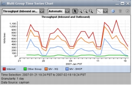
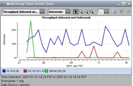
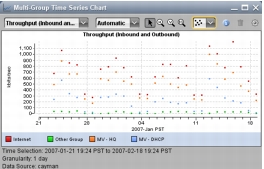
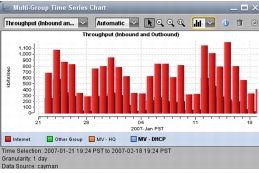
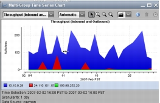
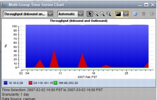
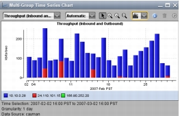
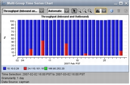

Chart Controls Charts have the following controls: Add Trendlines (Correlation Charts only) Chart Style Metric Granularity Remove Groups Select Groups Select Metric (Time Series charts only) Switch to Clients/Servers (Response Time Composition Charts only) Zoom (X Axis, Y Axis, and Original Scale) Chart Style The following table lists the styles that are available for Multi-Group and Multi-Metric Time Series Charts. Table 1 Time Series Chart Line Style Style Definition Picture Line A single line is drawn to represent the value of a metric for a group. If the metric value not available for a time interval, the line is drawn as if the value of the metric was recorded as zero.  Line Segment The line segment style is similar to the line style; however, the line is not drawn if the value of the metric is not available for a time interval. Line segments are drawn only if two consecutive data points are available. An isolated data point is drawn as a dot.  Dot The metric values are drawn as a series of dots. The line style connects these dots, the dot style leaves these data points unconnected.  Bar The bar style draws a vertical bar from zero to the metric value at each time for which a metric value is available.  Stacked Region The stacked region style draws a filled region representing the metric value for each group. Multiple values are stacked on top of each other. The top of the stack region represents the sum of all metric values displayed.  Stacked Region Percentage The stacked region percentage style draws a filled region representing the percentage of the sum of all values displayed for a given metric. The regions, stacked on top of each other, total 100%.  Stacked Bar The stacked bar style draws a bar representing the metric value for each group. Multiple values are stacked on top of each other. The top of the stack bar represents the sum of all metric values displayed.  Stacked Bar Percentage The stacked bars percentage style draws a bar representing the percentage of the sum of all values displayed for a given metric. The bars, stacked on top of each other, total 100%.  Metric Granularity AppResponse selects a metric granularity automatically in an attempt to generate visually appealing graphs. For charts that display one day of data, the default is 5 Minutes. For all time periods, this can be manually adjusted to one of four values (1 Minute, 5 Minutes, 1 Hour, or 1 day) for a chart using the metric granularity control. The selected granularity affects the quantity of data that must be read from the appliance database. Selecting 1 minute granularity with a large time selection (such as 1 week) might result in a long delay before the chart is drawn. If the delay is too long, hit the Cancel button and select a lower metric granularity.